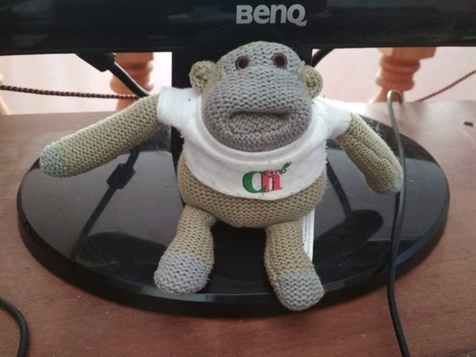

очень
сложный вопрос вы подняли...если бы я знала на него ответ - я бы
всегда поступала правильно и делала шаги только в направлении своих
целей.. Чтобы знать что это твоя цель -нужно четко это знать - когда
мысль об этой цели зажигает в тебе что то ...когда мысль об этой цели
приносит радость и мир в душе...вот мой критерий моей цели...Следующий
момент - очень сложный - выбор между тем нужно ли бороться, если что то
идет не так или нужно свернуть - ответ вообще не очевидный - потому что в
философии йоги - нужно копать колодец в одном месте чтобы найти воду -
т.е не сдаваться и идти и копать)) но не исключено что это обманка и
иллюзия, которая приведет тебя к удлиннению твоего пути во много раз -
но кто сказал что это плохо...может в этом и есть смысл что путь должен
быть длинным и преодалевающим...может быть в результате этого пути ты
станешь супер мега войном духа)) Поэтому у меня пока один критерий - это
правильно выбранная цель (по критериям выше) - если цель верна...то
путь не важно какой он верный или нет...Интуиция да это штука важная
...очень важная - поэтому нужно с ней укреплять взаимоотношения чтобы
лучше слышать и понимать - мой метод - это практики йоги - медитация,
асаны, питание...Как то так..
06:25
Ответить
0
+
−
pokachopotun
Задумался
над тем, что история самых важных и полезных поворотов в жизни на самом
деле - череда неудач и провалов. Каждый раз, когда что-то шло не по
плану, я был вынужден смотреть на другие возможности. Цепочка таких вот
выборов «лучшее среди худшего» и привела меня к отличным текущим
результатам.
4 Фев. 08:22
Ответить
+4
+
−
Mopps
Скажите,
а вы все задачи размечаете на зеленые и красные? Или остается облако
еще серых задач? Я пробую и так, и так, но не понимаю как лучше.
4 Фев. 08:19
Ответить
0
+
−
Андрей Влерьянкин
Хаха))
чем дальше в марафон, тем больше интуитивных практик, которые я всегда
лениво предпочитал "плановому занудству" Максим легализирует, просто
праздник какой-то! )) /// Но не честно было бы заявить что сам бы
стправился. У меня признание какой-то самородковой практики "легальной"
требует наличие внешнего Макса, котрый толково и аккуратно рассказывает
это всем присутствующим в голове сущностям, -- "Смотрите так же лучше,
это же мы все хотим" -- они такие -- "Да, да, ладно пусть будет так", --
и рациональный-сверх-таракан такой: "Ну хорошо, я не буду за это вас
больше ругать". /// Очень поучительно, задумался как бы интернировать
себе метод этого классного парня с объяснялками )) чтобы можно было
самому себе объяснять... Возможно ли это вообще?.. Или мы так устроены,
что должны расти об внешнее? Хмм.
Отредактирован
3 Фев. 12:46
Ответить
+4
+
−
podkolzzzin
А
я и не знал, что это "реверсивное стратегическое планирование", а ведь
так родился мой подкаст -- придя домой увидел лежащий на шкафу микрофон и
подумал: а что если с кем-то потрындеть по скайпу, записать это и
выложить в интернет. Листанул телефонную книгу, написал подходящему по
духу затеи другу и уже следующим вечером писали первый эпизод!
31 Янв. 14:44
Ответить
0
+
−
Eugenia2020
Теперь
могу с этим что-то сделать. С материалом этого дня. Мне очень нравится
идея «Действовать от обратного», от уже присутствующих возможностей и
решённых вопросов. Это расширяет спектр реализованных затей ^.^ Что я
увидела при внутренней ревизии? Интуитивно я довольно часто "собираю от
обратного". А планирование "сверху вниз" больше не к долгосрочным делам
относится. У меня из долгосрочных проектов только достойное воспитание
счастливых детей, которые умеют быть самостоятельными, принимать
собственные решения, которые смело себя проявляют в этой жизни и
чувствуют со мной глубокую и нерушимую связь. И я вижу, что процесс — в
процессе, и план "счастливый ребёнок" у меня реализован ежедневно. То
есть, эта "далёкая" цель на самом деле ежедневная. В общем, это я к
тому, что каких-то абстрактных и далёких целей у меня нет. Только здесь и
сейчас, которые мне доступны. Ну и ближайшее время для текущих
регулярных задач. Мир постоянно меняется, всё меняется. Основные цели —
здоровая жизнедеятельность, от которой интересно мне и полезно
окружающим. И это цель просто моего дня, которая естественным образом
так или иначе достигается.
Отредактирован
31 Янв. 06:11
Ответить
+1
+
−
natnetint
Я
обэтом совершенно забыла, но это тоже было в книге «Джедайские
техники». Помню, как я тогда придумала разное, что я могу сделать сходу
из того, что у меня уже есть. Так возник @geometrykanal и жив до сих
пор, вокруг собрались крутые геометры.
30 Янв. 22:49
Ответить
0
+
−
OlgaOvodova
natnetint,
Вас-то мне и надо. Я учитель математики и делаю курс по геометрии. Но
как подписаться на канал, не поняла, все кнопки понажимала.
4 Фев. 08:05
Еще 2 ответа
Asmr
Чёрт,
а ведь действительно много значительного произошло по воле случая,
удачи и стечения обстоятельств. Осознание этого ошеломляет) Одно важное
но: если бы я до этих самых случаев ничего не делала и не работала над
собой, то всё могло бы пойти по-другому
29 Янв. 10:06
Ответить
+5
+
−
VikDelovoi
Всё
таки немного не понял насчет зеленых задач. У меня почти все задачи
зеленые, т.к не работаю и около 80% времени посвящаю своим хобби и
увлечениям. А когда собственные деловые проекты фриланшу, понимаю что
они тоже только чтобы финансово поддержать свои увлечения. И получается
там задачи тоже зеленые. Как тогда их размечать непонятно, типа,
какие-то из них будут будут зеленее, чем другие?
27 Янв. 00:41
Ответить
0
+
−
Eugenia2020
Такое интересное сейчас со мной происходит... Глазами
только пробежалась сегодня по материалу дня. Какие-то вещи важные,
видимо, во мне цепляет. С которыми мне пока трудно взаимодействовать.
Он призывает к действию, этот 4-й уровень, этот секретный спринт. К действию в формате "левел ап" для меня.
До этого я легко делала каждый день Марафона. Ежедневно, планомерно, без особых трудностей. А тут вот.... я прямо-таки встряла.
Испытываю
очень большую благодарность к подруге моей, Мари, которая мне
порекомендовала, пригласила испытать на себе пользу Джедайских Техник.
Есть куда двигаться дальше, есть куда мне расти, вот что я сейчас чувствую и замечаю.
24 Янв. 09:11
Ответить
+3
+
−
Zarina Almukhanova
Горилла-это
та же обезьянка, с которой кайфово, но уже которая выросла,
повзрослела. На самом деле многие дела в масштабном плане были
достигнуты случайностями, которые один за одним появлялись. И это могло
произойти в пределах месяца. Но опять же это приходило когда уже годами
долго и мучительно пытаешься печь блины по рецепту, системе как у всех.
Выходит фигня(даже комочки не радуют). Бросаешь. И вот здесь приходит
третье- та самая случайность
23 Янв. 03:13
Ответить
+2
+
−
Kosha
Горилла
из ролика, да, как все и говорят - про избирательность нашего внимания.
Когда поставил цель, то можно не заметить какие-то даже очень крупные
обстоятельства рядом.
Гориллу
в том ролике я при первом просмотре не заметила, и это произвело на
меня сильнейшее впечатление, можно сказать - урок на всю жизнь. Так что
теперь к целям иду, но и по сторонам поглядываю - может, кто-то/что-то
меня к ним еще и подвезет-подкинет. Или еще какие-то возможности
откроются. Из целей, запланированных сверху, и успешно достигнутых безо
всяких случайностей могу сходу вспомнить только поступление в тот вуз,
куда хотела. Далее роль случая увеличилась. Но действуя в определенном
направлении, мы повышаем вероятность того, что обстоятельства сложатся
благоприятным для нас образом.
Отредактирован
17 Янв. 2021
Ответить
+2
+
−
Максим Погуляев
Действительно, много случайных событий привели туда где ты есть.
Горилла – наверное, из ролика, где нужно было считать количество бросков баскетбольного мяча у одной из команд.
Я
провожу еженедельные и ежемесячные чекины – это такой опросник
себя и небольшие задачки типа прочитать свои цели, посмотреть список
задач на следующую неделю и т.д. Вопросы периодически для себя меняю.
Одно время каждую неделю задавал себе вопрос "Какие большие возможности у
меня есть, которые не использую?" – выписывал список и ставил одну
задачу написать кому-нибудь или сделать другое действие.
Отредактирован
15 Янв. 2021
Ответить
+3
+
−
one_more_alex
Картинка огонь! Так же как и шутка про "комочки" ))
12 Янв. 2021
Ответить
+1
+
−
Waldorf
Участие
в марафоне было импульсным незапланированным желанием, которое принесло
кучу пользы. С идеей в материале полностью согласен - у меня в жизни
самые крутые вещи случились в моменты полного отсутствия планирования и
целеполагания, просто жизнь в потоке настоящего с чувством свободы
выбора (так, случайно нашел крутую работу, смотался поработать в Америку
и нашел там жену из России и тд:) ).
12 Янв. 2021
Ответить
+1
+
−
Demiurgich
Чем-то
подобным я занимаюсь во время недельного и месячного анализа. Я отвечаю
на вопросы, какими другими способами я могу быстрее достичь своей цели.
Как по-другому я могу сделать то, что запланировал. Правда, к моему
величайшему сожалению, руки до этого анализа доходят неприлично редко.
11 Янв. 2021
Ответить
+4
+
−
Vanita
Горилла
- это отсылка к эксперименту на внимательность) это образ того, как мы
упускаем то, что у нас прямо перед носом, когда зациклены на какой-то
задаче.
Мне
кажется, есть связь между страстным желанием чего-то добиться и
способностью замечать открывающиеся возможности. Особенно, когда желание
ощущается не как перечень действий, задач, подзадач, а как направление.
10 Янв. 2021
Ответить
+1
+
−
Tony_Litvin
А
я, может, немного странную вещь скажу. Но за время этого марафона я уже
столько раз перетряхнул свои списки проектов, целей и задач, что
хочется уже просто начать их делать ) Я уже понял свои "самые зелёные"
задачи, которые мне действительно важно сделать, и "самые ядрёно
красные", без выполнения которых будет плохо. Хочу уже плотно за них
взяться. А эту методику с гориллой буду применять по мере необходимости к
конкретным задачам / проектам / целям. Отложу её себе в отдельный
список )
8 Янв. 2021
Ответить
0
+
−
labetik
Горилла
- это повзрослевшая обезьянка, очень сильная и могущественная, знающая
чего хочет, живущая от сердца, в гармонии с природой. Вот такую обезьяну
нужно пускать к рулю почаще!
Отредактирован
8 Янв. 2021
Ответить
+1
+
−
labetik
Несколько
дней нахожусь под впечатлением от того, во что перешел этот марафон.
Замануха была на эффективную эффективность, а вышло все в терапию
неврозов и тотальный релакс и восстановление! Причем с каждым днем
перемены все глубже и интереснее. Огромное спасибо команде HYLS и
Максиму Дорофееву.
8 Янв. 2021
Ответить
+2
+
−
Поддержка HYLS
labetik,
просто не получится с какой-то одной стороны разгрести, надо комплексно
подходить) а заранее говорить о том, что будет такая комплексная работа
- скорее, будет звучать пугающе. Зато вот вы помаленьку втянулись,
сделали и увидели результат - все благодаря последовательности и четкому
разграничению работы🙂
10 Янв. 2021
1 ответ
labetik
Самые
крутые вещи происходили со мной абсолютно случайно и в состоянии
"игры". Когда доверялся интуиции и делал от сердца. Тогда даже выражение
лица другое. Но нужно было создавать такие прецеденты - ходить на
встречи, пробовать новое, то что иногда страшно но приносит
удовольствие. Но были и цели, например восхождение на Эльбрус или
Варшавский марафон 42км - к которым нужна была подготовка сверху вниз.
Баланс по середине, это точно! Не отрицать прошлый опыт и навыки, как
говорил Стив Джобс - "соединение точек" - это основа успеха. Очень
понравилась эта статья. Делай то что нравится с тем что имеешь, будь в
моменте, чтобы увидеть возможности и потом строй план по воплощению цели
и действуй!
Отредактирован
8 Янв. 2021
Ответить
+3
+
−
Lylya
В
отпуске в Греции приехала в Афины посмотреть достопримечательности и
купить любимую музыку. В части музыки распланировала: поеду в такой-то
торговый центр, там должно быть. Спускаюсь от Акрополиса и идея:"А давай
пойдем по этой улочке!". Мысли: "Ну, как это не рационально, путь к
метро будет на несколько сотен метров больше". А все равно пойду!
Сворачиваю, а там в подвале огромный магазин с греческой музыкой.
8 Янв. 2021
Ответить
+3
+
−
SofyaN
Немного грустно от осознания: многое из того, что у меня сейчас есть хорошего, было получено по воле случая. Конечно,
моя заслуга, что я не продалбываю эти случаи и это хорошее, исправно
извлекаю ресурсы и опыт, стараюсь быть открытой новым случайностям, но
при этом на подсознанке висит ощущение несоответствия, ощущения
самозванца - это не я добилась, это случайность, стечение обстоятельств,
и теперь нужно отчаянно пытаться соответствовать и делать всё, чтобы
меня не раскрыли...
В целом, я благодарна случаю и не отказываюсь
от своего везения, но иногда хочется добиться чего-либо самой, своими
целенаправленными усилиями.
Надеюсь, планирование снизу вверх мне
в этом поможет, никогда раньше не пробовала генерить идеи по принципу
"я тебя слепила из того что было", интересно посмотреть что из этого
выйдет))
8 Янв. 2021
Ответить
+4
+
−
Поддержка HYLS
SofyaN,
а что, если этот случай, это везение случились с вами именно потому что
это ВЫ? Может, все, что вы делали до этого, как раз и привело вас в
точку "везения"?
10 Янв. 2021
Еще 1 ответ
Ellen
Спасибо
вам за этот материал! Я задумалась и меня осенило. Все самое лучшее
приходило ко мне случайно, и моя жизнь кардинально менялась. Когда я
именно доверяла жизни и позволяла ей меня вести. Я вам даже не могу
передать насколько это счастливые моменты были. Это происходило 10 лет
назад, в течение нескольких лет я так жила. А потом что-то пошло
по-другому, я стала наделять важностью внешнее, выстраивать какие-то
цепочки, систему, что я что-то должна, и утратила эту легкость и поток. У
меня была искренняя любознательность и стремление познать жизнь, чтобы
она приоткрыла мне себя, благодаря этому и происходили со мной
удивительные открытия. А теперь желание подчинить жизнь себе и она стала
закрываться от меня. Я очень соскучилась по этой легкости и доверию.
Отредактирован
8 Янв. 2021
Ответить
+1
+
−
Lari
Вот
хорошей иллюстративной метрикой успеха могут быть лайки|просмотры в
Тик-Токе (сама не смотрю, но слышала про это). Когда слишком стараешься,
готовишься, пытаешься просчитать его алгоритмы - результата ноль.. А
потом 'выстреливает' видео, когда вообще отключил мозг и какую-то дичь в
слепом угаре пошел снимать! Наверное, это доверие интуиции
Отредактирован
3 Янв. 2021
Ответить
+3
+
−
installero
Я
уже где-то полгода не достигал именно вот тех целей, которые
запланированы. Заметил, что как только проект «планируется» сверху вниз,
то чем больше времени прошло от планирования, тем меньше шанс, что он
будет закончен. В моём текущем состоянии я катастрофически не вывожу
долгострои.
Однако, на прошлом спринте надо было удалить часть
проектов и в процессе перебирания всех моих проектов (большинство из
которых-таки удалил волевым решением) нашёл несколько, которые внезапно
оказались сделанными. Причём, вот как описывает Денис ниже, за пару
дней. Именно потому что в какой-то момент подвернулся удобный случай их
выполнить.
Пример: мне нужно было найти помощника для выполнения
рутинных задач по бизнесу, хотел засесть (сверху вниз) основательно его
искать, писать инструкции, однако недавно ездил в гости к сестре жены и
выяснил, что свояк (муж сестры жены) сидит без дела и без денег (т.к.
пандемия, удалёнки нет, вот это всё). В итоге за пару дней взял его себе
в помощники (2 дня, Карл!).
Именно поэтому я никогда не циклюсь
на текущих проектах в работе и часто сознательно их «скидываю», чтобы
набрать новых, для которых сейчас, быть может, более удобное время.
20 Дек. 16:32
Ответить
+7
+
−
Eugenia2020
installero, Это очень круто!! Спасибо вам за наглядный пример👍✨
24 Янв. 09:15
1 ответ
Denis Samchuk
(2
прохождение) забавный случай произшел недавно, планировал сходить к
стоматологу, но все пошло "наперекосяк". Элементами плана было
просмотреть клиники, просмотреть методы, выбрать, и поход откладывался
на следующий год, потому что "нет времени". И вот, на прошлой неделе
сломал зуб - походе горилла двинула мне в челюсть, чтрбы не маялся
фигней. И знаете, что? Стоматолог и клиника были найдены менее, чем за
сутки, а с зубами теперь полный порядок. И, конечно, эта задача теперь в
списке "ввполненное")
15 Дек. 10:10
Ответить
+7
+
−
San777
Почему
горилла? Потому что она была героем известного исследования, когда
люди, занимающиеся выполнением определённого задания при просмотре видео
на баскетбольной площадке не замечали, как там во всю прогуливалась
горилла по центру площадке на продолжительной части видео. Так и здесь,
упершись сознанием в определённые цели и способы их достижения, мы можем
не замечать гориллу удачной возможности у нас под носом.
13 Дек. 01:56
Ответить
+14
+
−
Максим Токмачёв
Краткосрочные цели легко достигаю. Долгосрочные сложно. Строю алгоритм по ним. Он редко реализовывается. Много непредвиденных обстоятельств. Сложно менять цели. Не удаётся интуицией управлять и достигать хотелок.
Отредактирован
12 Дек. 14:42
Ответить
+1
+
−
Ellen
Максим Токмачёв, Ей невозможно управлять, к ней можно только прислушиваться. Как только мы хотим завладеть ей, она замолкает.
8 Янв. 2021
1 ответ
Vlad_Ushakov
каким сочетанием клавиш в этом чате переходить на следующую строку?
11 Дек. 19:15
Ответить
+4
+
−
Комментарий удален
Нет ответов
Vlad_Ushakov
Часто ли у вас получается достигать целей, запланированные сверху? Если да, то вопреки чему? написать
план действий - достовляет удовольствие, но его реализация гдето на
полпути превращается в рутину, потмоу что сроки растягиваются из-за
новых прилетающих задач (сюрпризы жизни) и вожделение становится
упортсвом. но тут зависит от психики, кто-то готов два дня не спать не
есть, но закочнить работу, кто-то методично за 5 дней по 6 часов работы
сделает и не парится. Что вы чувствуете, когда приходится менять
цели? Есть ли в этом какое-нибудь сопротивление и как вы с ним
справляетесь? цели приходится менять из-за контекста или реалий и до
недавнего времени принимал, как свою несостояятельность (вот смешно,
право, сейчас), но часто цель не меняется, а меняются подходы к ней (вот
тут попроще) - например, построить дом или купить.
Удается ли
вам находить ключики к своей интуиции и находить удачное стечение
обстоятельств для своих хотелок? Если да, то расскажите как вы это
делаете? Походу современное образование отключает эту связь, причем,
даже не по гуманитарным специальностям, и вся интуиция сводится к
простой физиологии,а не более высоким целям. (ищи, кому это выгодно,
каквсегда). Почему горилла? потому что обезьянка рулит мелкими
задачами на выполнение, а горилла тоже не рациональна, но если махнет
рукой, то сразу и цель может быть достигнута (но может и не попасть, но
тоже что-то натворить интересного)
Отредактирован
11 Дек. 19:06
Ответить
0
+
−
Vlad_Ushakov
впервые сначала прочитал не материал, а отзывы - пошёл читать метариал!
11 Дек. 18:34
Ответить
+3
+
−
Patrick Star
Я
сейчас глобальные цели стараюсь переформулировать в "направления", т.е.
просто как ориентиры с которыми можно сверять текущую деятельность /
ситуации с возможностями продвинуться в нужных "направлениях".
Глобальные цели сложно достигнуть, долго и не всегда удается и обозначив
их просто как направления можно сосредоточиться на процессе. Сейчас,
в свои 36, я еще большую важность стал придавать удовольствию от
процесса, т.к. раньше на это не обращал внимание и выгорал на пути к
какой-нибудь своей цели, но процесс был мучительным и я устал так жить,
хочется больше радости в моменте.
8 Дек. 04:31
Ответить
+9
+
−
Patrick Star
Мой метафорический спутник во всех делах 8)
8 Дек. 04:15

Ответить
+7
+
−
Patrick Star
Часто ли у вас получается достигать целей, запланированные сверху? Если да, то вопреки чему? Очень
редко, на середине пути или ближе к концу начинаю прокрастинировать и
80% проектов бросаю в таком состоянии, или мучительно допинываю до
финиша и результат особо не радует... :( Чаще какие то короткие
проекты делаю на одном дыхании, спонтанно, придумал - взялся - сделал. и
процесс в удовольствие и результат
Что вы чувствуете, когда приходится менять цели? Есть ли в этом какое-нибудь сопротивление и как вы с ним справляетесь? Чувствую
разочарование в себе и жалею потраченное время и усилия (и ресурсы) на
цель которую бросаю недостигнутой (проект недоделанным) Сопротивления
особого нет, т.к. меняю цели когда те к которым шел начинаю
прокарстинировать и застваить себя двигаться к ним становится
мучительно.
Удается ли вам находить ключики к своей интуиции и
находить удачное стечение обстоятельств для своих хотелок? Если да, то
расскажите как вы это делаете? Скорее нет. Хотя возможно в мелочах такое случается иногда, но по крупному не припомню такого (или не замечаю)
7 Дек. 08:41
Ответить
+2
+
−
anabalaata
Гормлла,
потому что родственница обезьянки? Такая же непредсказуемая, но
большая. Правда, увидев заголовок, подумала, что горилла будет приятелем
панического монстра.
Отредактирован
4 Дек. 18:53
Ответить
+6
+
−
Поддержка HYLS
anabalaata, да, действительно) пожалуй, такая ассоциация и правда имеет место быть
4 Дек. 19:20
1 ответ
Alexander Prokhorov
Стало
грустно. Плюнул на всё и достал электрогитару, которая пылилась уже
года два-три в чехле. Давно хотел научиться, но по пути и "под напором"
сдался. Удивительно, но даже струны почти не растянулись. Записал в
"зелёные". И пошёл раскапывать другой ворох "зелени" вроде диссера.
2 Дек. 22:59
Ответить
+7
+
−
Максим Дорофеев
Alexander Prokhorov,
С диссером осторожнее, по моему опыту там чаще всего не бабочки
шевелятся, а извращенные представления о собственном эго или не желание
разочаровывать родственников
9 Дек. 18:18
Еще 1 ответ
Людмила Бердникова
Интуиция
меня часто ведёт по жизни. Если меня тянет в магазин ,значит есть для
меня нужная книга. Если что-то не так, как я планировала, значит, есть
вариант лучше, в чём позже убеждаешься. Если цель встречает препятствие,
и идёт раздражение…стоп. Это интуиция говорит, чтобы я остановилась,
пока не поздно. Я трижды ставила цель –найти определённую работу, но
ТРИЖДЫ прошла случайно по нужной улице и от встречи с человеком
меняла её, ни разу не пожалев при этом. С возрастом интуиция увеличивает
свою силу, если не проявлять консерватизм.
1 Дек. 23:26
Ответить
+7
+
−
alexnikolas13
Когда меняю цель это меня раздражает сильно или почти нет. Но это мне не нравится. Интуиция
меня бывает подводит, не такая как у жены :( для реализации своих
хотелок бывает планирую, и потом все как по маслу складываются
обстоятельства так , что они от меня не завися в мою пользу аж самому
становится удисительно. Пример :получить разрешение на стройку гаража в
центре города, когда мер наложил на это мараторий ) вообще таких случаев
достаточно много.
30 Ноя. 00:29
Ответить
0
+
−
alexnikolas13
Часто
достигаю цели и это не всегда благодаря упорному труду, а время и
случай. И когда достиг кажется что цель была и не такой далекой.
30 Ноя. 00:13
Ответить
+2
+
−
mac
очень понравилась иллюстрация с фонариком, не смог удержаться :)
Горилла - обезьяна, получившая левел-ап и параллельно со всеми характеристиками прокачавшая ещё и удачу х)
28 Ноя. 15:26
Ответить
+2
+
−
Denis Samchuk
Бомбическая
статья! Ковровые бомбардировки инсайтами моих мозгов. Как в фильме
Нолана "Начало", где арки повествования закладываются. Бам! Бам! Бам!
Так и у меня голове. Ага! Да! Блин, так и есть!
27 Ноя. 23:26
Ответить
0
+
−
Denis Samchuk
Офигительные
события происходили где то между : я греб в определенном направлении и
классные неслучайные случайности попадались, и я их хватал их, потому
что результат и эмоции. Я думал уехать в США или Германию заниматься
стволовыми клетками (потому что у нас "нет" ) а под боком оказалась
клеточная лаборатория в Москве - греб с сторону подготовки. И я провел
один из восхитительных и увлекательных годов в жизни, а в штаты съездил
уже через 5 месяцев. ЕБШ конечно, но очень увлекательно.
27 Ноя. 23:24
Ответить
+4
+
−
Denis Samchuk
Хотя
не )) итак "горрила". Друзья, на уй ваши упоминания вВайсманна. Где,
что то новенькое? Где драма?))) Потому что горилла, это мощная и сильная
обезьяна. По началу текста, мне казалось, что горрилла это символ
угрозы под носом. А, сейчас, в моем представлении серебристая горилла,
это для меня символ удачи. Обезьянка 99 левела)) схватить удачу за
жё....) вот такую метафору для себя придумал. Вудумайте и что нибудь
интересное для себя. Это ваши образы )
27 Ноя. 23:17
Ответить
+1
+
−
Denis Samchuk
Офигеть... надо переспать с мыслями. Слишком много инсайтов взорвалось.
27 Ноя. 23:05
Ответить
0
+
−
Максим Дорофеев
Denis Samchuk, Класс! :) Очень хорошо, когда много инсайтов! :)
30 Ноя. 16:24
1 ответ
Юлия
И
ещё я знаю про себя, что мне не стоит проговаривать свои хотелки и цели
другим людям, потому что от этого уменьшается вероятность их
достижения. Потому что если мои хотелки какие-то амбициозные,
неочевидные или необщепринятые, то их тут же становится нужно защищать
от критики других людей, а я обычно не готова это делать, именно потому,
что боюсь целей. Потому что я не знаю, как понять, насколько сбыточна
моя хотелка: пойти искать людей, которые реализовали похожую? Какую-то
статистику смотреть? Какую, где всё это берут? Релевантно ли это ко мне?
Скорее всего, нет. Зато ко мне релевантно, подходит ли мне образ жизни,
продиктованный реализацией этой хотелки, и выбираю хотелки я в основном
по этому признаку. Но другим людям хочется знать - а можно ли реально
этим заработать? а сколько? а как долго ты будешь к этому идти? И когда я
начинаю задумываться над тем, что ответить на весь этот скепсис, мне
становится грустно и страшно и вообще где я в жизни свернула не туда.
27 Ноя. 19:09
Ответить
+7
+
−
SofyaN
Юлия,
как знакомо)) Помимо неприятного процесса защиты хотелки от сторонних
мнений, у меня ещё наблюдается эффект: если кому-то скажу, значит точно
не сделаю. Причём не важно, встречусь я со скепсисом или поддержкой.
Такое ощущение, что поделившись идеями, от которых внутри бабочек как в
тропическом лесу, то словно бы отдаёшь людям часть этих бабочек, и в
итоге от этого всего как-то меньше прёт...
Глазами только пробежалась сегодня по материалу дня. Какие-то вещи важные, видимо, во мне цепляет. С которыми мне пока трудно взаимодействовать.
Он призывает к действию, этот 4-й уровень, этот секретный спринт.
К действию в формате "левел ап" для меня.
До этого я легко делала каждый день Марафона. Ежедневно, планомерно, без особых трудностей.
А тут вот.... я прямо-таки встряла.
Испытываю очень большую благодарность к подруге моей, Мари, которая мне порекомендовала, пригласила испытать на себе пользу Джедайских Техник.
Есть куда двигаться дальше, есть куда мне расти, вот что я сейчас чувствую и замечаю.
Горилла – наверное, из ролика, где нужно было считать количество бросков баскетбольного мяча у одной из команд.
Я провожу еженедельные и ежемесячные чекины – это такой опросник себя и небольшие задачки типа прочитать свои цели, посмотреть список задач на следующую неделю и т.д. Вопросы периодически для себя меняю. Одно время каждую неделю задавал себе вопрос "Какие большие возможности у меня есть, которые не использую?" – выписывал список и ставил одну задачу написать кому-нибудь или сделать другое действие.
Конечно, моя заслуга, что я не продалбываю эти случаи и это хорошее, исправно извлекаю ресурсы и опыт, стараюсь быть открытой новым случайностям, но при этом на подсознанке висит ощущение несоответствия, ощущения самозванца - это не я добилась, это случайность, стечение обстоятельств, и теперь нужно отчаянно пытаться соответствовать и делать всё, чтобы меня не раскрыли...
В целом, я благодарна случаю и не отказываюсь от своего везения, но иногда хочется добиться чего-либо самой, своими целенаправленными усилиями.
Надеюсь, планирование снизу вверх мне в этом поможет, никогда раньше не пробовала генерить идеи по принципу "я тебя слепила из того что было", интересно посмотреть что из этого выйдет))
Однако, на прошлом спринте надо было удалить часть проектов и в процессе перебирания всех моих проектов (большинство из которых-таки удалил волевым решением) нашёл несколько, которые внезапно оказались сделанными. Причём, вот как описывает Денис ниже, за пару дней. Именно потому что в какой-то момент подвернулся удобный случай их выполнить.
Пример: мне нужно было найти помощника для выполнения рутинных задач по бизнесу, хотел засесть (сверху вниз) основательно его искать, писать инструкции, однако недавно ездил в гости к сестре жены и выяснил, что свояк (муж сестры жены) сидит без дела и без денег (т.к. пандемия, удалёнки нет, вот это всё). В итоге за пару дней взял его себе в помощники (2 дня, Карл!).
Именно поэтому я никогда не циклюсь на текущих проектах в работе и часто сознательно их «скидываю», чтобы набрать новых, для которых сейчас, быть может, более удобное время.
Много непредвиденных обстоятельств. Сложно менять цели.
Не удаётся интуицией управлять и достигать хотелок.
написать план действий - достовляет удовольствие, но его реализация гдето на полпути превращается в рутину, потмоу что сроки растягиваются из-за новых прилетающих задач (сюрпризы жизни) и вожделение становится упортсвом. но тут зависит от психики, кто-то готов два дня не спать не есть, но закочнить работу, кто-то методично за 5 дней по 6 часов работы сделает и не парится.
Что вы чувствуете, когда приходится менять цели? Есть ли в этом какое-нибудь сопротивление и как вы с ним справляетесь? цели приходится менять из-за контекста или реалий и до недавнего времени принимал, как свою несостояятельность (вот смешно, право, сейчас), но часто цель не меняется, а меняются подходы к ней (вот тут попроще) - например, построить дом или купить.
Удается ли вам находить ключики к своей интуиции и находить удачное стечение обстоятельств для своих хотелок? Если да, то расскажите как вы это делаете? Походу современное образование отключает эту связь, причем, даже не по гуманитарным специальностям, и вся интуиция сводится к простой физиологии,а не более высоким целям. (ищи, кому это выгодно, каквсегда). Почему горилла? потому что обезьянка рулит мелкими задачами на выполнение, а горилла тоже не рациональна, но если махнет рукой, то сразу и цель может быть достигнута (но может и не попасть, но тоже что-то натворить интересного)
Сейчас, в свои 36, я еще большую важность стал придавать удовольствию от процесса, т.к. раньше на это не обращал внимание и выгорал на пути к какой-нибудь своей цели, но процесс был мучительным и я устал так жить, хочется больше радости в моменте.
Очень редко, на середине пути или ближе к концу начинаю прокрастинировать и 80% проектов бросаю в таком состоянии, или мучительно допинываю до финиша и результат особо не радует... :(
Чаще какие то короткие проекты делаю на одном дыхании, спонтанно, придумал - взялся - сделал. и процесс в удовольствие и результат
Что вы чувствуете, когда приходится менять цели? Есть ли в этом какое-нибудь сопротивление и как вы с ним справляетесь?
Чувствую разочарование в себе и жалею потраченное время и усилия (и ресурсы) на цель которую бросаю недостигнутой (проект недоделанным)
Сопротивления особого нет, т.к. меняю цели когда те к которым шел начинаю прокарстинировать и застваить себя двигаться к ним становится мучительно.
Удается ли вам находить ключики к своей интуиции и находить удачное стечение обстоятельств для своих хотелок? Если да, то расскажите как вы это делаете?
Скорее нет. Хотя возможно в мелочах такое случается иногда, но по крупному не припомню такого (или не замечаю)
Интуиция меня бывает подводит, не такая как у жены :( для реализации своих хотелок бывает планирую, и потом все как по маслу складываются обстоятельства так , что они от меня не завися в мою пользу аж самому становится удисительно. Пример :получить разрешение на стройку гаража в центре города, когда мер наложил на это мараторий ) вообще таких случаев достаточно много.